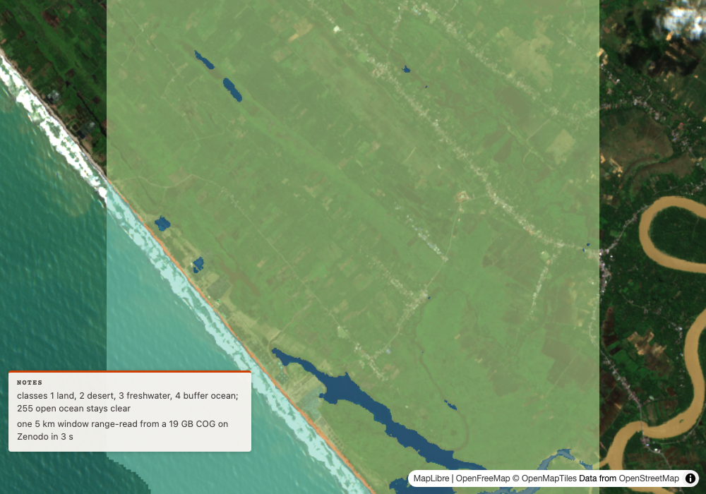
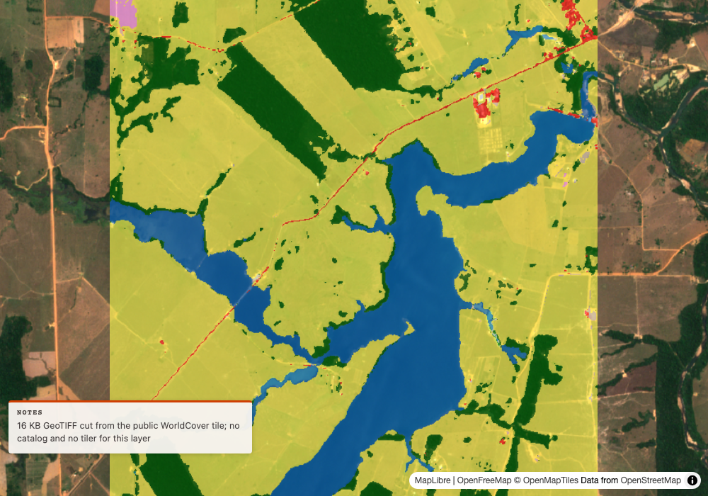
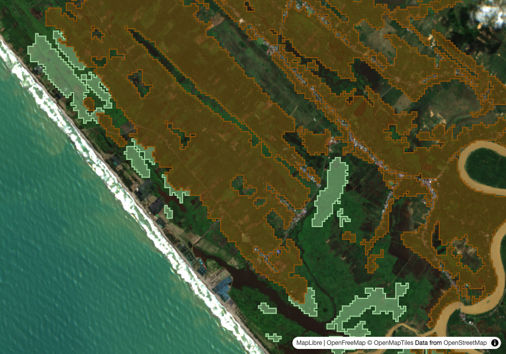
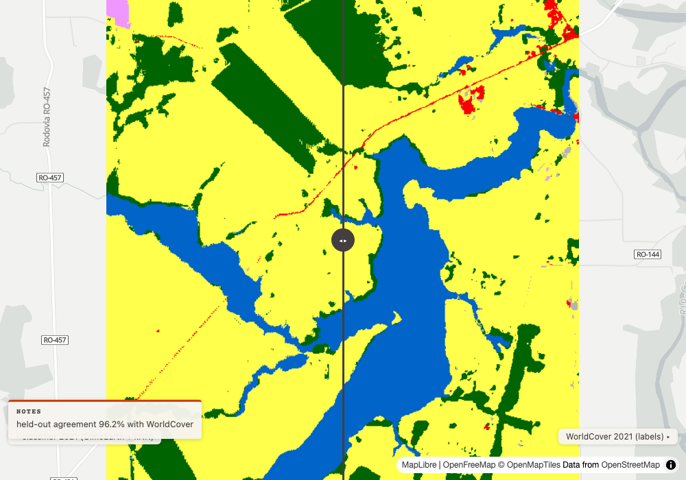
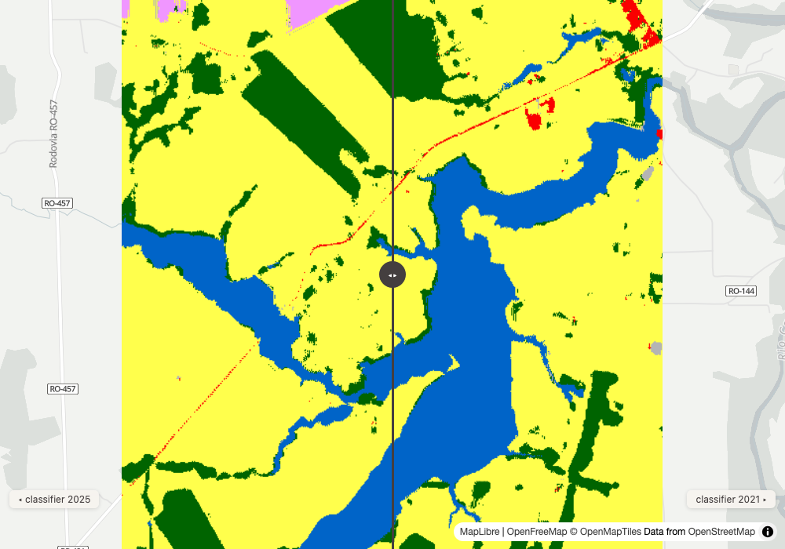
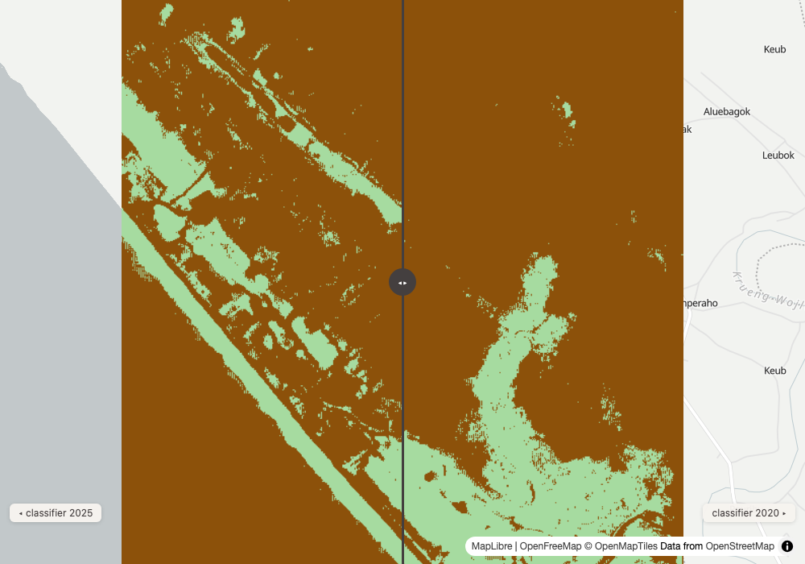

Round 1: a fresh release and local files, on the map
1
a release from 2 weeks ago
Danny
Input
A global 10 m land mask just came out on Zenodo. Can groundstation use it? Look at west Aceh.
Our read
Yes, by hand.
Learning → Works.

map: land mask classes over Sentinel-2, west Aceh ↗full read
Our read
Yes, by hand. The land mask (Moreno, Ho and Parente, Zenodo, 2026-10-16, CC BY 4.0) is one 19 GB COG that no catalog carries, but it range-reads: a 5 km window over west Aceh came back in 3 seconds as a 5 KB file. The window is 80% land, 16% buffer ocean (coastal water within about 1 km of shore), 2% freshwater, 0.4% desert and 0.4% open ocean, which is nodata 255 and stays clear on the map.show the data
search_datasets("global land mask", bbox=[95.925, 4.285, 95.975, 4.335])
{"searched": ["earth-search", "veda", "planetary-computer", "zarr"], "note": "nothing matched 'global land mask' in 4 catalog(s): earth-search, veda, planetary-computer, zarr. Absence here does not mean the data does not exist, only that these catalogs do not carry it under those words"}
rasterio.open(/vsicurl/ zenodo.org/records/23416478/files/land.mask_ensemble_c_10m_..._v20260807.tif) CPL_VSIL_CURL_USE_HEAD=NO
size_px [4320000, 1728000] dtype uint8 nodata 255.0 block [2048, 2048] res_deg 0.00008333 crs EPSG:4326
overviews [2, 4, 8, 16, 32, 64, 128, 256, 512, 1024, 2048, 4099]
window [95.925, 4.285, 95.975, 4.335]: 3.0 s, pixel counts {"1": 289000, "2": 1616, "3": 8649, "4": 59169, "255": 1566}, written 5 KB
search_imagery("earth-search", ["sentinel-2-l2a"], bbox=[95.925, 4.285, 95.975, 4.335], datetime_range="2025-01-01/2025-10-01", max_cloud_cover=20)
recommended: S2C_46NHK_20250717_0_L2A cloud 9.1 covers_aoi_pct 100.0
reason: 9.1% cloud, covers 100.0% of the area, and newest of 3 near-equal scenes; the clearest (7.8% cloud) is from 2025-03-24
render_map("Global land mask (Oct 2026) over west Aceh", bbox=[95.925, 4.285, 95.975, 4.335], layers=[S2C_46NHK_20250717_0_L2A visual, file landmask-aceh.tif colormap 1-4, opacity 0.55])
map_path: docs/img/ft21-landmask-aceh.html
Learning → Works. The skill's order held: resolve the release, try the tools (search_datasets says plainly that no catalog has it), then probe the header, then one window. One trap, now in the skill: GDAL could not open Zenodo's /api/ file URL, and it opens the plain /records/ URL once its HEAD request is turned off (CPL_VSIL_CURL_USE_HEAD=NO). Range requests themselves work (206).
search_datasets absence note · COG header and overviews by range read · one 2048 px block for a 5 km window · nodata 255 kept clear · file layer over Sentinel-2
2
a local file on a map
Danny
Input
Put ESA WorldCover 2021 for this corner of Rondônia on a map from a local file, over Sentinel-2 from the same year.
Our read
A 16 KB GeoTIFF cut from the public WorldCover tile goes on as a file layer, with no catalog and no tiler in its path.
Learning → Works.

map: WorldCover 2021 as a local file over Sentinel-2 ↗full read
Our read
A 16 KB GeoTIFF cut from the public WorldCover tile goes on as a file layer, with no catalog and no tiler in its path. The 5 km box is 69% grassland, 14% tree cover and 17% water, with traces of cropland, built-up and bare ground.show the data
rasterio window read, esa-worldcover.s3 .../v200/2021/map/ESA_WorldCover_10m_2021_v200_S12W066_Map.tif, bbox [-63.125, -9.975, -63.075, -9.925]
{"nodata": 0.0, "counts": {"10": 48891, "30": 246710, "40": 899, "50": 2701, "60": 942, "80": 59850, "90": 7}, "file_kb": 16}
search_imagery("earth-search", ["sentinel-2-l2a"], bbox=[-63.125, -9.975, -63.075, -9.925], datetime_range="2021-06-01/2021-09-30", max_cloud_cover=10)
recommended: S2B_20LMQ_20210917_1_L2A cloud 2.4 covers_aoi_pct 100.0
reason: 2.4% cloud but covers 100.0% of the area; the clearest scene (0.9% cloud) covers 48.4%
render_map("ESA WorldCover 2021 over Rondonia, as a local file", bbox=[-63.125, -9.975, -63.075, -9.925], layers=[S2B_20LMQ_20210917_1_L2A visual, file worldcover-2021-rondonia.tif, WorldCover colours, opacity 0.6])
state.layers[1]: {"name": "WorldCover 2021", "kind": "raster", "bounds": [-63.125, -9.975, -63.075, -9.925], "local": true, "opacity": 0.6}
Learning → Works. The file layer from PR 121 did its job: nodata 0 stays clear, and the Stack panel credits rio-tiler for a local raster. The recommended scene came with its reason: the clearest one (0.9% cloud) covers only 48% of the box.
public COG window to a local GeoTIFF · file layer with a class colormap · state.layers marks it local · scene pick names the coverage trade
3
filled classes over imagery
Danny
Input
Show ForTy's 2020 forest types over this year's imagery in west Aceh.
Our read
28 ForTy polygons fall in the 5 km box, 14 naturally regenerating and 14 tree crops and agroforestry; primary and plantation forest do not reach it.
Learning → Works.

map: ForTy 2020 classes, filled, over Sentinel-2 ↗full read
Our read
28 ForTy polygons fall in the 5 km box, 14 naturally regenerating and 14 tree crops and agroforestry; primary and plantation forest do not reach it. Filled at 45% over Sentinel-2 from 2025-07-17, the class edges are readable against the fields and the coast.show the data
demo/forty/forty-aceh-2020-labels.geojson (ForTy zone 46N, vectorised at 40 m in the 2026-10-29 run), features with a vertex in [95.925, 4.285, 95.975, 4.335]
{"Primary forest": 0, "Naturally regenerating": 14, "Plantation forest": 0, "Tree crops & agroforestry": 14}
render_map("ForTy 2020 forest types over west Aceh", bbox=[95.925, 4.285, 95.975, 4.335], layers=[S2C_46NHK_20250717_0_L2A visual, geojson per class, fill_opacity 0.45])
map_path: docs/img/ft21-forty-aceh.html
Learning → Works. Polygon fill (PR 119) is what makes this readable. The polygons are a 40 m vectorisation from the earlier run, so edges are blocky; the file layer in card 2 is the sharper route when the raster is on disk.
geojson layers filled at 0.45 · 2 of ForTy's 6 classes in this box · 2020 classes over 2025 imagery
Round 2: OlmoEarth read directly, and what it refuses
4
which years exist where
Danny
Input
Which years of OlmoEarth exist where? Is 2017 to 2020 really still backfilling?
Our read
Every place sampled has every year: Rondônia has 2017 to 2025 at 100% coverage, and Portland, Nairobi and Rio Branco each have 2017, 2020 and 2021 at 100%.
Learning → Partly.
full read
Our read
Every place sampled has every year: Rondônia has 2017 to 2025 at 100% coverage, and Portland, Nairobi and Rio Branco each have 2017, 2020 and 2021 at 100%. The release notes said 2017 to 2020 were still backfilling; at these 4 places in 4 UTM zones, that work looks done. 4 places is a sample, not the globe.show the data
compute_statistics("zarr", "olmoearth-v1-3-embeddings", "embeddings", bbox=[-63.105, -9.955, -63.095, -9.945], sel={time: 2017..2025, band: 0}) Rondônia, utm20
2017: coverage_pct 100.0 mean dim 0 -0.0146
2018: coverage_pct 100.0 mean dim 0 -0.0518
2019: coverage_pct 100.0 mean dim 0 -0.0139
2020: coverage_pct 100.0 mean dim 0 -0.0134
2021: coverage_pct 100.0 mean dim 0 -0.1268
2022: coverage_pct 100.0 mean dim 0 -0.159
2023: coverage_pct 100.0 mean dim 0 -0.1832
2024: coverage_pct 100.0 mean dim 0 -0.089
2025: coverage_pct 100.0 mean dim 0 -0.157
compute_statistics(..., sel={time: 2017 | 2020 | 2021, band: 0}) over 1 km boxes
Portland 2017: coverage_pct 100.0 zone utm10
Portland 2020: coverage_pct 100.0 zone utm10
Portland 2021: coverage_pct 100.0 zone utm10
Nairobi 2017: coverage_pct 100.0 zone utm37
Nairobi 2020: coverage_pct 100.0 zone utm37
Nairobi 2021: coverage_pct 100.0 zone utm37
Rio Branco 2017: coverage_pct 100.0 zone utm19
Rio Branco 2020: coverage_pct 100.0 zone utm19
Rio Branco 2021: coverage_pct 100.0 zone utm19
Learning → Partly. The reads work and each costs one 4 MB chunk. But groundstation's own words are now stale: the store's coverage line and the classifier's missing-year message both still say 2017 to 2020 are backfilling. Next: check a few more zones, then change that line to what the store holds.
9 years at one place, 3 years at 3 more · utm10, utm19, utm20, utm37 · one 4 MB chunk per year · a stale note found
5
one dimension, 2 places
Danny
Input
Compare one OlmoEarth dimension between Aceh tree crops and Rondônia pasture.
Our read
Dimension 0 tells them apart: mean -0.40 in Aceh against -0.09 in Rondônia, with spreads of 0.16 and 0.14.
Learning → Works.
full read
Our read
Dimension 0 tells them apart: mean -0.40 in Aceh against -0.09 in Rondônia, with spreads of 0.16 and 0.14. Dimension 1 barely does: 0.37 against 0.40. Neither number is a measurement; they are model features, useful only for comparing.show the data
compute_statistics("zarr", "olmoearth-v1-3-embeddings", "embeddings", bbox=1 km box, sel={time: 2024, band: 0 | 1})
aceh dim 0 (2024): mean -0.3998 std 0.1585 count 12656 coverage_pct 100.0
aceh dim 1 (2024): mean 0.3711 std 0.1116 count 12656 coverage_pct 100.0
rondonia dim 0 (2024): mean -0.089 std 0.1406 count 12210 coverage_pct 100.0
rondonia dim 1 (2024): mean 0.4047 std 0.0943 count 12210 coverage_pct 100.0
caveats: ["an embedding dimension is a model feature, not a measurement: compare places or years with it, never read the number as a physical value", "decoded from int8 with the store's rule ((abs(q) / 127.5) ** 2.0 * sign(q)), nodata excluded"]
Learning → Works. The caveat travels with every number and says what it is not. One dimension alone is a thin view of a 128-dimension embedding; the classifier cards below use the first 64.
decoded int8 with the store's own rule · 1 km boxes in 2 UTM zones · feature, not measurement, caveat
6
asking for too much
Danny
Input
Classify a 33 km box in Rondônia, and then the same area for 2016.
Our read
Both refused before any embedding was read, each with its reason: the box is 33 x 33 km against a 10 km cap (every 2.5 km costs a 4 MB chunk), and 2016 is before the store's first year,…
Learning → Works.
full read
Our read
Both refused before any embedding was read, each with its reason: the box is 33 x 33 km against a 10 km cap (every 2.5 km costs a 4 MB chunk), and 2016 is before the store's first year, 2017.show the data
classify_embeddings("demo/ft21/worldcover-2021-rondonia.tif", 2021, bbox=[-63.3, -10.1, -63.0, -9.8])
{"error": "bbox is 33 x 33 km; OlmoEarth v1.3 annual embeddings, 10 m (Ai2) reads at most about 10 km a side, since every 2.5 km costs a 4 MB chunk"}
classify_embeddings("demo/ft21/worldcover-2021-rondonia.tif", 2016, bbox=[-63.125, -9.975, -63.075, -9.925])
{"error": "[2016] not in OlmoEarth v1.3 annual embeddings, 10 m (Ai2) for utm20; it holds 2017 to 2025, and 2017 to 2020 are still backfilling in places"}
compute_statistics("zarr", "olmoearth-v1-3-embeddings", "embeddings", bbox=1 km box, sel={time: 2016})
{"error": "year 2016 is not in OlmoEarth v1.3 annual embeddings, 10 m (Ai2); it holds 2017 to 2025"}
Learning → Works. Refusals name the cost, so the next try is obvious: a smaller box, or a year from 2017. The year message carries the same stale backfill line as card 4.
size cap with its reason · year range from the store itself · no download before a refusal
7
weather beside it
Danny
Input
Put ERA5 weather beside the embeddings for the Aceh box.
Our read
ERA5 has one 1.5 degree cell over the whole area: 301.87 K (28.7 °C) at 2020-07-01 06:00 UTC, the same value for a 2 degree box and for the 5 km box.
Learning → Works, and the caveats earn it.
full read
Our read
ERA5 has one 1.5 degree cell over the whole area: 301.87 K (28.7 °C) at 2020-07-01 06:00 UTC, the same value for a 2 degree box and for the 5 km box. A cell that size spans about 165 km, so it is context for the region, not a reading for any pixel. This ERA5 copy ends in January 2023, so there is no 2025 to set beside the 2025 map.show the data
compute_statistics("zarr", "weatherbench2-era5", "2m_temperature", bbox=[95.0, 3.5, 97.0, 5.0], sel={time: "2020-07-01T06:00"})
2m_temperature: {"min": 301.873046875, "max": 301.873046875, "mean": 301.873046875, "median": 301.873046875, "std": 0.0, "percentile_2": 301.873046875, "percentile_98": 301.873046875, "count": 1}
caveats: ["coarse grid: only 1 cell(s) (cell size 1.5 deg) fall in the bbox, so min/max/mean are close to one model value, not a local average"]
compute_statistics("zarr", "weatherbench2-era5", "2m_temperature", bbox=[95.925, 4.285, 95.975, 4.335], sel={time: "2020-07-01T06:00"})
mean: 301.873046875 count: 1
caveats: ["bbox is smaller than one grid cell: the value is the nearest cell, not an area statistic", "coarse grid: only 1 cell(s) (cell size 1.5 deg) fall in the bbox, so min/max/mean are close to one model value, not a local average"]
Learning → Works, and the caveats earn it. Both say the value is one model cell, not an area average. Weather and 10 m embeddings sit 4 orders of magnitude apart in scale; pairing them needs a finer weather store, not a smaller box.
2 Zarr stores in one session · coarse-grid and smaller-than-a-cell caveats · ERA5 range ends 2023-01
Round 3: labels in, class maps out
8
labels in, map out
Danny
Input
Train on the WorldCover 2021 labels from card 2 and give me OlmoEarth's 2021 class map for the same box.
Our read
96.2% of held-out pixels agree with WorldCover, over 6 classes, in 16 seconds for 2 years of embeddings.
Learning → Works.

swipe: WorldCover 2021 against the classifier's 2021 ↗full read
Our read
96.2% of held-out pixels agree with WorldCover, over 6 classes, in 16 seconds for 2 years of embeddings. The big classes are learned well (grassland 98%, water 97%, tree cover 89%); the small ones are not (built-up 54%, bare 26%). Wetland had 7 pixels and was dropped.show the data
classify_embeddings("demo/ft21/worldcover-2021-rondonia.tif", 2021, [2021, 2025], bbox=[-63.125, -9.975, -63.075, -9.925], class_names=)
classes: {"1": "tree cover", "2": "grassland", "3": "cropland", "4": "built-up", "5": "bare", "6": "water"}
training: {"labelled_px": 303037, "train_px": 20000, "held_out_px": 75760, "per_class_px": {"tree cover": 41063, "grassland": 207830, "cropland": 753, "built-up": 2227, "bare": 816, "water": 50348}}
held_out_agreement_pct: 96.2
per_class: {"tree cover": {"labelled_pct": 13.6, "predicted_pct": 13.2, "agreement_pct": 89.2}, "grassland": {"labelled_pct": 68.6, "predicted_pct": 69.2, "agreement_pct": 98.0}, "cropland": {"labelled_pct": 0.2, "predicted_pct": 0.2, "agreement_pct": 84.6}, "built-up": {"labelled_pct": 0.7, "predicted_pct": 0.6, "agreement_pct": 53.9}, "bare": {"labelled_pct": 0.3, "predicted_pct": 0.1, "agreement_pct": 26.0}, "water": {"labelled_pct": 16.6, "predicted_pct": 16.7, "agreement_pct": 97.4}}
changes: {"from": 2021, "to": 2025, "changed_pct": 4.9, "top": [{"from": "tree cover", "to": "grassland", "ha": 48.7}, {"from": "grassland", "to": "tree cover", "ha": 39.5}, {"from": "grassland", "to": "cropland", "ha": 19.5}, {"from": "grassland", "to": "water", "ha": 10.6}, {"from": "cropland", "to": "grassland", "ha": 5.6}]}
caveats: ["dropped wetland: fewer than 30 labelled pixels with embeddings, so the maps never show them", "a class change between years includes classifier noise, which flips scattered single pixels; read a change as land change only where it forms patches", "labels inherited: the model learns the labels' mistakes too, and 96.2% held-out agreement is agreement with the labels, not with the ground", "embeddings from other years carry the classifier forward without new labels; a class that did not exist in the label year cannot appear", "held-out pixels sit beside training pixels, so agreement runs high; expect lower on ground the labels never touched", "every pixel gets one of 6 classes: land the labels did not cover (water, towns, bare ground) is forced into the nearest one unless the labels include a class for it"]
seconds: 16
years: {"2021": {"coverage_pct": 100.0, "shares_pct": {"tree cover": 13.1, "grassland": 69.2, "cropland": 0.2, "built-up": 0.6, "bare": 0.1, "water": 16.7}}, "2025": {"coverage_pct": 100.0, "shares_pct": {"tree cover": 12.8, "grassland": 68.9, "cropland": 0.7, "built-up": 0.5, "bare": 0.1, "water": 16.9}}}
render_map("Rondonia: WorldCover 2021 labels against the classifier's 2021 map", compare=True, layers=[file WorldCover, file classifier 2021 (classified)])
map_path: docs/img/ft21-classify-rondonia-2021.html
Learning → Works. The first run returned classes as bare numbers ("10", "30"), because a GeoTIFF carries no names. Fixed in the same PR: class_names maps values to names. The headline agreement hides the small classes; per_class is where to look. On the swipe, the Notes box covers the left layer's name: a layout fix for the map template.
GeoTIFF labels reprojected onto the UTM grid · 20,000 training pixels, 75,760 held out · per-class agreement · labels against prediction swipe
9
what changed
Danny
Input
With the same classifier, what changed in that Rondônia box from 2021 to 2025?
Our read
4.9% of pixels changed class, but most of it cancels: 48.7 ha went from tree cover to grassland and 39.5 ha the other way, which looks like classifier noise.
Learning → Partly.

swipe: classifier 2021 against 2025, Rondônia ↗full read
Our read
4.9% of pixels changed class, but most of it cancels: 48.7 ha went from tree cover to grassland and 39.5 ha the other way, which looks like classifier noise. The one-way signal is cropland: grassland to cropland 19.5 ha, cropland from 0.2% to 0.7% of the box.show the data
same call as the card above
changes: {"from": 2021, "to": 2025, "changed_pct": 4.9, "top": [{"from": "tree cover", "to": "grassland", "ha": 48.7}, {"from": "grassland", "to": "tree cover", "ha": 39.5}, {"from": "grassland", "to": "cropland", "ha": 19.5}, {"from": "grassland", "to": "water", "ha": 10.6}, {"from": "cropland", "to": "grassland", "ha": 5.6}]}
years: {"2021": {"tree cover": 13.1, "grassland": 69.2, "cropland": 0.2, "built-up": 0.6, "bare": 0.1, "water": 16.7}, "2025": {"tree cover": 12.8, "grassland": 68.9, "cropland": 0.7, "built-up": 0.5, "bare": 0.1, "water": 16.9}}
render_map("Rondonia: classifier 2021 against 2025", compare=True, layers=[file classifier 2021, file classifier 2025])
map_path: docs/img/ft21-change-rondonia.html
Learning → Partly. The noise caveat did real work: without it, 49 ha of "forest loss" reads as news. The upgrade is a minimum patch size (sieve) before counting changes, so scattered single-pixel flips drop out and patches stay.
from-to pairs in hectares · symmetric flips read as noise · one directional change · year swipe
10
pairing 2 releases
Danny
Input
Pair 2 October releases: ForTy's 2020 classes as labels on OlmoEarth, then 2020 against 2025 in west Aceh.
Our read
98.2% held-out agreement, but over 2 classes only: primary and plantation forest had too few pixels in this 5 km box and were dropped.
Learning → Partly.

swipe: ForTy-trained classes, 2020 against 2025 ↗full read
Our read
98.2% held-out agreement, but over 2 classes only: primary and plantation forest had too few pixels in this 5 km box and were dropped. Regrowth goes from 17% to 21% of the box; 222 ha flip tree crops to regrowth and 100 ha the other way. Card 1's land mask says 16% of this box is coastal water, and ForTy gives no water class, so the sea is forced into these 2 classes.show the data
classify_embeddings("demo/forty/forty-aceh-2020-labels.geojson", 2020, [2020, 2025], bbox=[95.925, 4.285, 95.975, 4.335])
classes: {"1": "Naturally regenerating", "4": "Tree crops & agroforestry"}
training: {"labelled_px": 132267, "train_px": 20000, "held_out_px": 33067, "per_class_px": {"Naturally regenerating": 13708, "Tree crops & agroforestry": 118559}}
held_out_agreement_pct: 98.2
per_class: {"Naturally regenerating": {"labelled_pct": 10.4, "predicted_pct": 9.9, "agreement_pct": 88.9}, "Tree crops & agroforestry": {"labelled_pct": 89.6, "predicted_pct": 90.1, "agreement_pct": 99.3}}
changes: {"from": 2020, "to": 2025, "changed_pct": 10.3, "top": [{"from": "Tree crops & agroforestry", "to": "Naturally regenerating", "ha": 222.2}, {"from": "Naturally regenerating", "to": "Tree crops & agroforestry", "ha": 99.7}]}
caveats: ["dropped Plantation forest, Primary forest: fewer than 30 labelled pixels with embeddings, so the maps never show them", "a class change between years includes classifier noise, which flips scattered single pixels; read a change as land change only where it forms patches", "labels inherited: the model learns the labels' mistakes too, and 98.2% held-out agreement is agreement with the labels, not with the ground", "embeddings from other years carry the classifier forward without new labels; a class that did not exist in the label year cannot appear", "held-out pixels sit beside training pixels, so agreement runs high; expect lower on ground the labels never touched", "every pixel gets one of 2 classes: land the labels did not cover (water, towns, bare ground) is forced into the nearest one unless the labels include a class for it"]
seconds: 14
years: {"2020": {"coverage_pct": 100.0, "shares_pct": {"Naturally regenerating": 17.2, "Tree crops & agroforestry": 82.8}}, "2025": {"coverage_pct": 100.0, "shares_pct": {"Naturally regenerating": 21.1, "Tree crops & agroforestry": 78.9}}}
render_map("West Aceh: ForTy-trained classes, 2020 against 2025", compare=True, layers=[file classifier 2020, file classifier 2025])
map_path: docs/img/ft21-forty-olmoearth-aceh.html
Learning → Partly. The method from the earlier hand run now takes one call (14 s, against an afternoon). It is higher than the hand run's 81% because there are fewer classes and held-out pixels sit beside training ones, both caveated. The best next move pairs 3 releases: add the land mask's water as a class, so the sea stops landing in regrowth.
GeoJSON labels in, 2 GeoTIFFs out · dropped classes named · the every-pixel-gets-a-class caveat made concrete by card 1
Reproduce
git clone https://github.com/dannybauman/groundstation && cd groundstation
git switch feat/embedding-classifier
bash scripts/doctor.sh # walks the setup chain, prints the fix
uv run evals/unit_checks.py # 215 offline checks
uv run scripts/field_test.py docs/field-test-2026-10-29-no21.cases.json